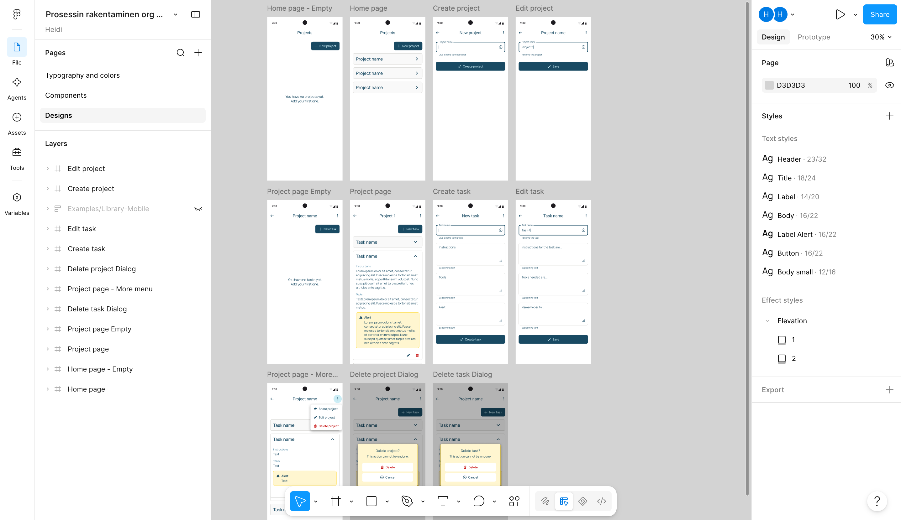
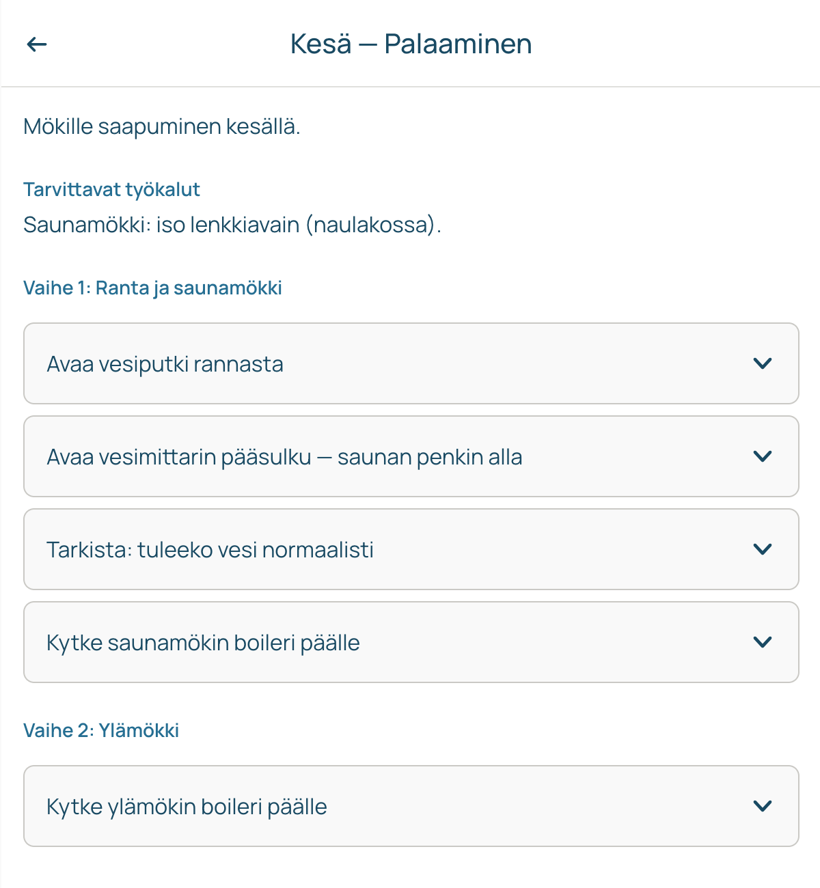
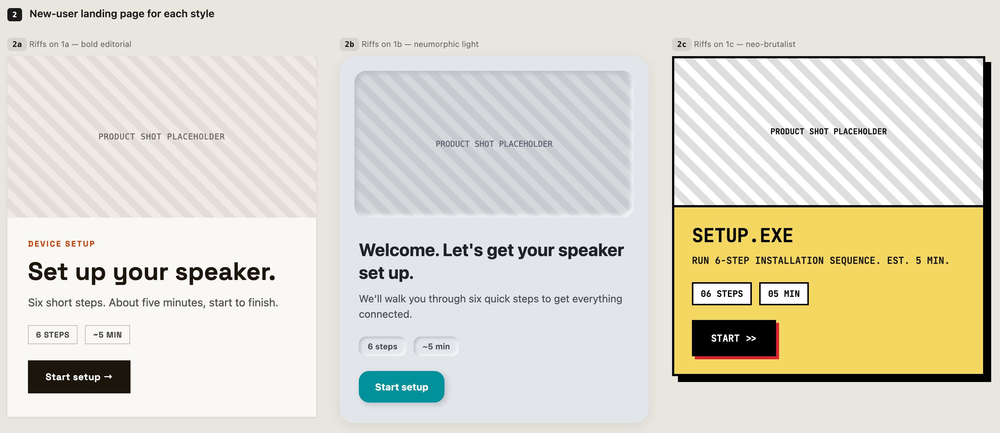
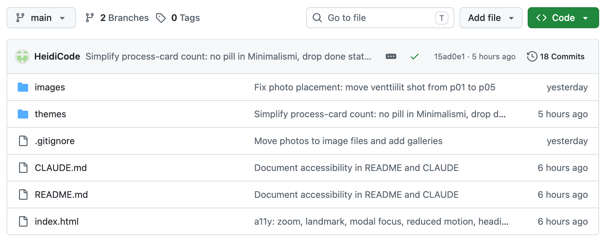
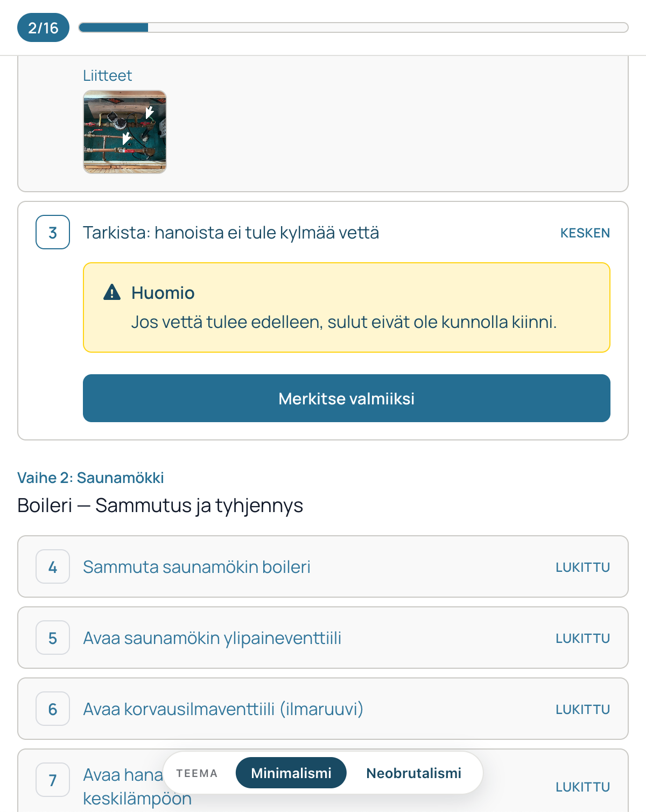

Reshaping Workflows
#PersonalProject
#AIWorkflow
Large language models are changing how almost every field works, and there’s no ready-made playbook for it. Everyone has to find the ways of working that suit them. As a UX/UI designer, my work has centred on ideation, design and user understanding. I’d taken part in coding front ends before, but AI now makes it possible to reshape the whole workflow. I wanted to test how different AI tools could link the stages of my work together, from start to finish, and produce something I could actually use on my phone.
The test case was real. Our family needed clear instructions for turning on the running water at our summer cabin and distributing it between buildings. Winter adds complexity: some pipes freeze and can’t be used, and the boilers need to be operated differently depending on the situation. It didn’t need to be polished, just simple and functional. It was a good, low-stakes way to try new ways of working.
Live app: Mökin vedet
Team
Solo project
My contribution
Design, prototyping, and hands-on build, using AI tools as collaborators at each stage.
Ideation
I started by talking the idea through with ChatGPT. But I didn’t approach it as the cabin problem directly. Instead I framed it as a simple process-documentation tool, where a user creates a process and describes a task step by step, attaching images and notes about what must be checked before each one. Framing it generically gave me room to experiment with different tools and workflows at each later stage, instead of being locked into one narrow use case.
Together we shaped this into a clear product vision and MVP plan: the problem, the audience, current workflows, and a competitor analysis that placed it somewhere between lightweight screenshot guides and heavy compliance systems. ChatGPT did a reasonable job with the analysis, but it kept wanting to add scope, like user accounts and pricing models, more than a personal project needed. Deciding what to leave out took more effort than the analysis itself.
Design system and prototype
With the blueprint ready, I moved into Figma and drew a first simple version myself: the key components and CRUD elements (create, read, update, delete). I wanted to see how the AI tools would handle a real starting point instead of a blank file. From there, Figma’s built-in design agent built out a small design system with variables, colours and typography, and suggested its own additions for what the system still needed. It followed my instructions well and fixed the couple of small component bugs it introduced as soon as I pointed them out. It worked so well that I plan to use it for most of the work I do inside Figma from now on.

I also gave the design file to Figma Make to turn it into a clickable prototype. This is the lighter way to use AI here, since it doesn’t create new elements, just makes a working prototype out of the existing design. It did an okay job. It started building a back end I didn’t need, but once I said so, it kept things simple: enough to click through creating, editing, and deleting tasks. No need to save anything for later.
Figma file: Prosessin rakentaminen — Design system
Figma Make prototype: Prosessin rakentaminen — Prototyyppi
Coding and pushing back to Figma
Next, I gave Claude Code access to the Figma design system, plus a folder of markdown files describing the cabin’s water system: its constraints, the boilers, and which pipes freeze in winter. I asked it to build a working HTML page with situation-specific instructions, describing each task, the tools needed, and what to check before starting. Once the page worked, I wanted to see how well Claude Code could take the project back into Figma, so I asked it to build a new design system with the components and documentation both a designer and a developer would need.

Claude Code worked well overall. It had minor trouble making the code pixel-perfect against the Figma drawings, so I had to correct the CSS myself. Claude is slow at small visual fixes like that, since it takes a screenshot, studies it, and compares it back to the design. It was often faster to just fix the code by hand. Being comfortable reading and writing CSS and HTML helped a lot here.
The components Claude Code built in Figma worked fine, and all the necessary elements were there, but the layout was off. Claude put every component on its own page, so the instructions ended up disconnected from the components they described. That’s something I still need to fix in the design system.
Figma file: Prosessit — Claudista Figmaan
Exploring styles and features
To explore other visual directions, I gave Claude Design very little on purpose: a description of the app’s basic features and one reference, an article about 2026 web design trends. I didn’t want to constrain its ideation with the work from earlier stages. It came back with several visually different versions of the task list. I made small corrections and picked the one I liked best.

Because Claude Design can’t reach Figma yet, at least not in summer 2026, I couldn’t push the new style into the Figma project. So I had it produce an HTML version of the design system instead, which I could hand to Claude Code to carry the work on.
Even though I tried to constrain the ideation as little as possible, the visual suggestions felt a bit bland to me. My limited reference material probably contributed; I should have gathered a bigger set of clearly distinct examples. Still, a couple of the suggestions were genuinely good, and I picked one to carry forward. Later, I added a switch to the app, so you can change between the minimalist original theme and the new neobrutalist one as a demonstration. Eventually, I’ll let users choose which theme is better.
Version control & handoff
Version history matters a lot for coded products, especially when vibe-coding, since AI can break already finished elements and you need to revert. I used GitHub, driven through Claude Code, to give the prototype a real home: a versioned, public repository with a live, auto-deploying address, and a proper version-control workflow instead of saving files over the top of each other.
I wanted the project to demonstrate version control too, not just get published, so I asked for it to be structured the way a developer team would work. Claude Code created the repository, made a clean first commit as a baseline, and switched on GitHub Pages. From there we worked feature by feature: each meaningful change, like the switch between the two visual themes, went onto its own branch, into a pull request, and back into the main line. A short project guide file now gives anyone picking up the repo the context they need.

Knowing Git’s principles from GitLab meant I wasn’t learning version control and a new tool at the same time, so I could prompt deliberately: a branch here, a pull request there. Claude Code handled the mechanics quickly and correctly. My job was the judgement calls, like how to structure the repo and what belonged in a public repo at all. That last one mattered more than I expected. Partway through I renamed the project, because the original name gave away where our cabin is. Scrubbing it from the current files was easy. Realising it still lingers in the commit history was the real lesson: on a public repo, everything you commit stays part of the record, not just the latest version.
Repo: github.com/HeidiCode/Mokin-vedet
Live app: heidicode.github.io/Mokin-vedet
Accessibility audit
With the app working in both themes, I wanted to check it was genuinely usable, not just by me. I asked Claude Code to audit it against WCAG 2.1 AA across both themes and fix whatever it found. Rather than driving Lighthouse by hand, it ran axe-core (the same accessibility engine Lighthouse uses) directly against the running page, testing each theme and view systematically.
It came back with a concrete list of problems and a fix for each: one critical issue, photo thumbnails that were buttons with no accessible name, plus colour-contrast failures, a viewport setting that blocked pinch-zoom, content sitting outside any landmark, focus escaping the completion dialog, and animations ignoring a “reduce motion” system setting. Claude Code worked through them all and re-ran axe-core after each batch until every view in both themes reported zero violations.

The contrast problems were familiar territory. Colour and hierarchy are a visual designer’s own ground: I’d dimmed the “locked” future steps with transparency so they’d recede, which easily drops text below the required contrast. The fix was finding a muted pairing, a cream card with grey text, that still reads as faded but measures above the 4.5:1 threshold. That kind of trade-off is something a tool can measure but not decide for you. The genuinely new part was everything underneath: keyboard focus escaping a dialog, buttons with no accessible name, content sitting outside any landmark. That has always been developer territory, but this time I worked through it myself and verified each fix with axe. It’s the clearest example in this whole project of AI extending my reach rather than replacing what I already do.
Standard: WCAG 2.1 AA, verified with axe-core in both themes.
Outcomes & lessons learned
The point of this project was to explore different tools and AIs so I could stitch up a workflow for different kinds of projects. Now I know where these tools excel and what to look out for.
What began as a way to share cabin instructions with my family became a full run through the product process, done solo with AI. The idea went from a ChatGPT conversation to a designed MVP and a living design system in Figma, to a working, vibe-coded prototype, through a visual-style exploration and an accessibility pass, and finally to a public, versioned repository a developer could pick up. That’s the real result: a small personal need turned into a handoff-ready app. Not long ago, some of those stages would have needed other people.
No single tool did it all. Each earned its place at a different stage: ChatGPT for framing and scope, Figma’s agent and Figma Make for the design and prototype, Claude Code for building and for the Git and GitHub mechanics, Claude Design for visual exploration, axe-core for the accessibility audit. The tools don’t yet always talk to each other, so I bridged them by hand, like turning an MVP blueprint into something a coding AI could use, or exporting an HTML design system so one AI’s output could become another’s input.
My own skills didn’t become redundant. They became judgement. Being fluent in CSS and HTML meant I could step in where Claude Code was slow. Knowing Git’s principles meant I could prompt deliberately instead of accepting whatever came out. A tool could measure a problem, but it couldn’t make the call: which MVP features to cut, when a change deserved its own branch, what belongs in a public repo, or how to keep a “faded” look while still passing a contrast threshold. Those decisions stayed mine.
The honest limits are worth keeping in view too. ChatGPT over-scopes and needs reining in. Claude Design’s ideas were only as good as the references I gave it. Claude Code is slow at small visual fixes, and it sometimes jumps straight to work from the slightest suggestion, even when I only wanted options.
The app isn’t finished. Next is usability testing with real users, then iterating on what they find. But as an experiment in working with AI, it already did what I set out to do: it showed me how far one designer can reach across the whole product process, and where my own hands and judgement still make the difference.
Live app: heidicode.github.io/Mokin-vedet